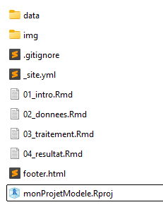
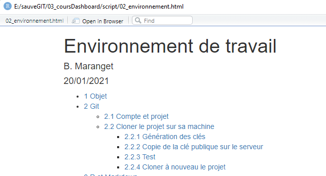
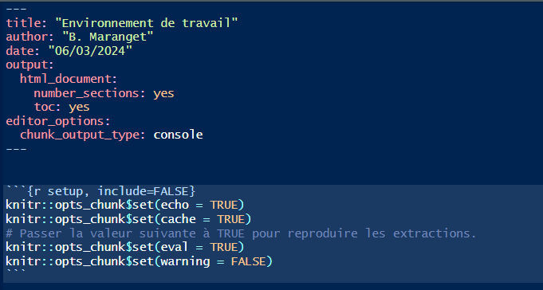
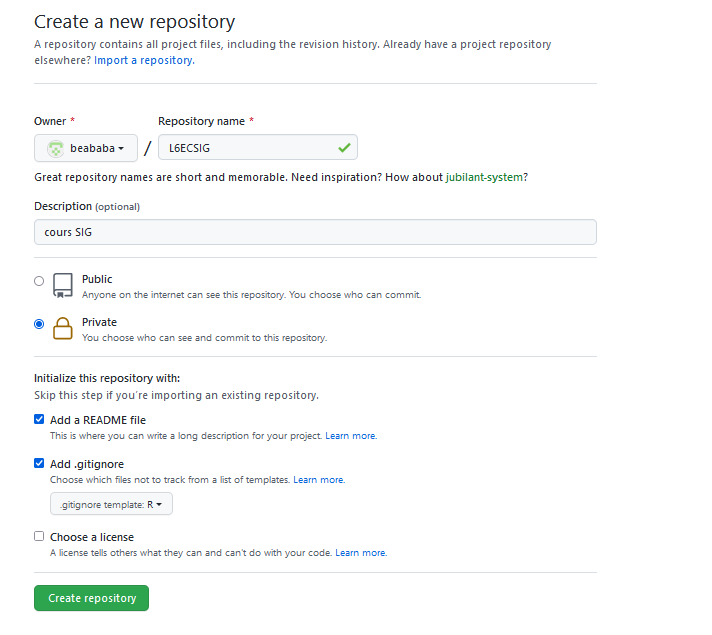
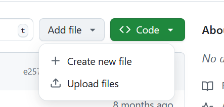
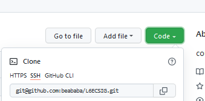
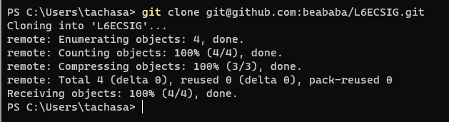
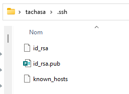

Pour construire le site web sur lequel déposer le projet de fin de semestre, il faut deux éléments
Projet R, markdown, _site.yml
Concernant git, c’est plus difficile, à voir peut-être plus tard (galère probable pour les clés SSH)
4 fenêtres
File / Nouveau projet
Le projet permet de conserver l’emplacement des fichiers.
Créer l’arborescence suivante

Dans l’interface Rstudio, fichier / nouveau markdown
Enregistrer le markdown dans le répertoire projet dans Rstudio, le knitter.


---
output:
html_document:
number_sections: yes
toc: yes
editor_options:
chunk_output_type: console
---Et, juste en dessous, dans un chunk avec la mention {r setup, include=FALSE}
knitr::opts_chunk$set(echo = TRUE)
knitr::opts_chunk$set(cache = TRUE)
# Passer la valeur suivante à TRUE pour reproduire les extractions.
knitr::opts_chunk$set(eval = TRUE)
knitr::opts_chunk$set(warning = FALSE)source :
https://blog.wax-o.com/2014/04/tutoriel-un-guide-pour-bien-commencer-avec-markdown/
source :
https://ymlthis.r-lib.org/reference/yml_site_opts.html#examples
name: "L6ECSIG Construction et utilisation des SIG"
navbar:
left:
- text: "Introduction"
href: 01_intro.html
- text: "Environnement"
href: 02_environnement.html
- text: "Bases R"
href: 03_basesR.html
- text: "R spatial"
href: 04_Rspatial.html
- text: "Correction"
href: 05_correction.html
- text: "Donnees"
href: 06_Donnees.html
- text: "Traitement"
href: 07_traitement.html
- text: "Resultat"
href: 08_resultat.html
right:
- icon: fa-github
href: https://github.com/beababa/beababa.github.io
output:
html_document:
toc_float: TRUE
theme: united
highlight: tango
include:
after_body: footer.html
number_sections: yes
exclude: [data-raw, data]
css: css/styles.cssA noter
attention aux accents
à chaque knit, quels changements dans l’arborescence du projet ?
Construire votre _site.yml avec une intro / donnees / traitement / resultat et sans style particulier (le css)
Créer un compte GIT et un projet

Chaque étudiant crée un compte git et met en place le projet nom.github.io afin d’avoir un site internet.
Les données seront téléchargées par l’interface graphique.

Les données téléchargées seront uniquement celles du répertoire “_site” du projet.
cloner le projet sur son pc avec la commande git clone et le lien vers le répertoire
Récupérer le lien https du projet dans code

Pour ouvrir une fenêtre cmd, il suffit de faire le bouton windows et de taper cmd.

Cela ne fonctionne pas … il faut installer les commandes git sous votre machine (sous Mac et Linux c’est pré-installé)
source : https://astuces-informatique.com/comment-installer-utiliser-git-sous-windows/
Faire l’installation et essayer à nouveau de cloner…
L’utilisation des clés permet d’éviter la saisie du mot de passe.
Pour pouvoir travailler ainsi, il faut avoir générer des clés
Ouvrir une fenêtre avec la commande cmd et saisir ssh-keygen
Le répertoire où la clé est créée est, par défaut, le répertoire utilisateur. (afficher les fichiers cachés est nécessaire)
Le répertoire utilisateur est à la racine de votre profil.

source :
https://www.lojiciels.com/comment-generer-des-cles-publiques-privees-ssh-sous-windows/
Au niveau du github, coin haut droit settings puis ssh keys
Il s’agit de récupérer le contenu de la clé, la commande en ligne
clip < .ssh/id_rsa.pub
(Sinon ouvrir le fichier et faire un copier - coller)
source :
git pull
git add .
git commit -m "version finale veille cours"
git pushL6ECSIG Construction et utilisation des SIG